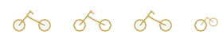
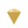

Bem-vindo ao pelotão
Conecte o Strava para entrar nos rankings e relatórios do grupo. Somente leitura — não publicamos no seu nome.

Regras do clube
Desafios épicos — moinhos e parques na rota, sem subidas.
Parar pra comer e parar pra beber — faz parte do ritual.

Ponto final: sorvete no Paulinho
Gelato Van der Poel — carinhosamente o Paulinho. Obrigatório.
Foto da equipe no local — não esqueça!
Só contam pedaladas após a data em que você entrou no grupo.
Conectar Strava
Autorize o app Flat and Furious para sincronizar suas pedaladas.
Autorizar no StravaApós autorizar, você verá uma página de confirmação neste site.